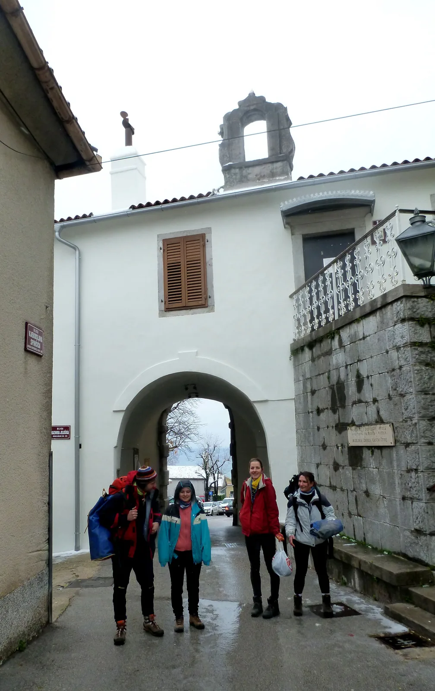

Vikend u Zračku nade II
Četir' djeve i jedan vitez dojahaše podno Kastva grada. Vjetar silni i kiša pusta ne učini im straha. Ali zato zima gladna nauči ih pameti...

Napisala: Ana Lipovac Fotografije: Ana Bakšić, Luka Havliček, Tea Selaković, Ana Lipovac
Petoro nas; Marina Grandić, Tea Selaković, Ana Bakšić, Luka Havliček i ja, u petak navečer (8.12.2017.) natrpali smo se sa špiljarskom opremom i pošli prema hrvatskoj obali. Na vrhu gradića Kastva, nalazi se kula i u toj kuli princeza koju čuva zmaj. Krenuli smo u pohod, iako su nam velike kaplje kiše ometale vid (i smočile nam odjeću u ruksacima), uspjeli smo pokoriti zmaja i osvojiti grad, postali smo novi kraljevi. Ma šalim se, ali jesmo uspjeli pronaći Estaveline prostore na vrhu Kastva.Osam ujutro i svi smo disciplinirano budni, ali još uvijek u vrećama. "Vaaaaani je snijeg!" - Ana B. je saznala još po noći da je i ovaj dio Hrvatske -tko bi vjerovao- zabijeljen. Spremamo se za jamu, hrana, voda, kacige, kordure, oprema... "Ja sam zaboravila korduru, nije moje jutro."- čuje se u pozadini Marina. No to se brzo rješava pozivom bratu kako bi joj posudio nekakvo vodo i vatrootporno odijelo. - "Ha, nemam ni kacigu- stvarno se osjećam kao školarka."
I tako je Marina u bratovom radnom odijelu, Estavelinoj kacigi i Lukinoj tikki (jer je njena prestala raditi) krenula u jamu. Najviša planina istarskog poluotoka, Učka, okovana snijegom, poželjela nam je dobrodošlicu u trenutno najdulju jamu Primorsko-goranske županije, Zračak nade II. Jama iz koje je tako lijepo puhalo da su svi imali nade da ide dalje, pa su čak 6 godina proveli proširujući ju (vrlo impresivno). Neki na guzicama, a neki pješke, spustili smo se do ulaza u, kako se nama činilo iz perspektive ljudi koji su skoro do koljena u snijegu- saunu.
U Nadu se prva spustila Tea, zatim Ana B., Ana L. (ja), Marina i na kraju Lukica. Puna vertikalnih skokova, suženja, uskih hodnika prekrivenih tepihom (za velike zvijezde špiljarije) i ostataka oruđa za proširivanje - kako je Marina primijetila - poput muzeja. Prošla kišovita noć i današnji snijeg učinili su svoje i u jami se na nekoliko mjesta nadnio slap. "Aaaaaaaaa!" - to se čuje kako tko od nas prolazi kroz zadnju vertikalu i zadnji vodeni slap. Havliček i četiri mokre bakice u dobroj formi stigli su na dno i smjestili se u bivak kako bi se najeli, zgrijali i posušili. Nekima je to išlo vrlo glatko, a nekima... ne.
[caption id="attachment_1760" align="alignnone" width="3240"] Dva sata mazohizma na najjače[/caption]Bilo je tu cijeđenja flisa, jednog para čarapa, drugog para čarapa (kao miš sam bila mokra). Tea i Luka otišli su prošetati glavnim kanalom (njihovim riječima - najveći kanal u kojem smo bili, ni Kita to nema, i špagete vise sa stropa), Marina je ostala posušiti karimate u bivku, a Ana B. i ja krenule smo van (smrznuta i mokra školarka, znali smo da će nam trebati barem 3 sata da se izvučemo). Prva vertikala i nova kupka, zatim provlačenje i batrganje i gubljenje energije. Još vrlo mala u špiljarstvu imala sam uz sebe Anu koja mi je putem davala snagu da nastavim dalje.
[caption id="attachment_1761" align="alignnone" width="3308"] Mokre i sretne :)[/caption]U međuvremenu, Marina nas je prestigla i dobila ključeve od automobila kako bi upalila grijanje dok mi ostali ne stignemo van. Mislim da sam upalu mišića imala već na izlazu iz jame. "Heeeej, pa ja sam vani!" - uzviknula sam kada sam shvatila da je oko mene hladno i snježno (ali i dalje mračno). Hitrim korakom, Ana i ja, uputile smo se autu u kojem nas je dočekala Marina.
Mokre i zaleđene presvukle smo se u suhu odjeću i pričekale Teu i Luku polako se zagrijavajući. Nakon uspješnog izlaska svih pet špijara, uputili smo se ka planinarskom domu na bilo što toplo, ali stigli u kuću (restoran) francuskih čajeva bez kolačića.... Jer nam je gospodin konobar na naše gladno oduševljenje što je Tea ponijela čitavu kutiju muffina rekao: "Neće biti kolačića za vas!"
Pomalo već zagrijani, blatnjavi po licu, vratili smo se u prenoćište kulu. Iako je to bio prvotni plan, odlučili smo da sutra ne oblačimo zaleđena pododjela i kordure (koje smo samo nagurali u ruksake i ostavili u prtljažniku i koje su naravno počele curiti i smočile sve i svašta) i ne idemo u Maklensku jamu (50 metarsku jamu nacrtanu još davne '74.).
Slijedećeg jutra oprostili smo se od naše kraljevine u kuli koju je čuvao zmaj i prošetali puževom stazom grada Kastva te obalom grada Opatije. Put za Zagreb bio je prekinut divnim štrudlama od borovnice i šumskog voća, čajem, kavom i kakaom. Tea nas je odbacila do odredišta, a ja sam navečer ležala u krevetu i razmišljala kako sam to provela najteži vikend u svom životu. A uspjela sam vidjeti i more i snijeg i jamu u isti dan. [caption id="attachment_1763" align="alignnone" width="3896"] I pobjegosmo u Zagreb gdje nema snijega i gdje nije hladno[/caption] Galerija fotografija